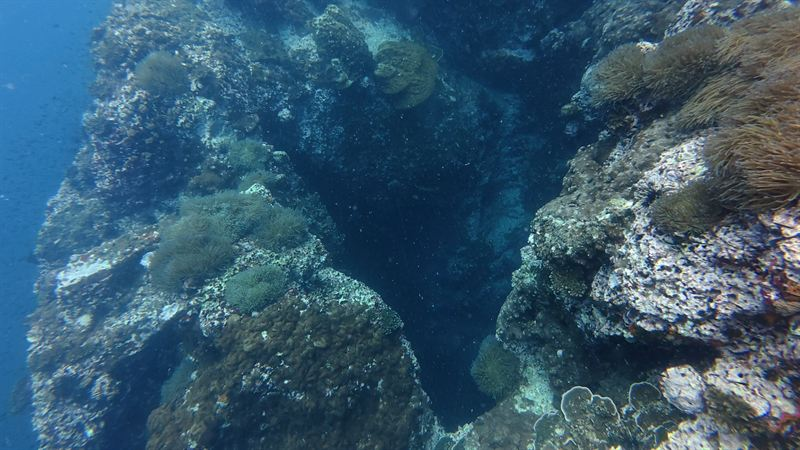
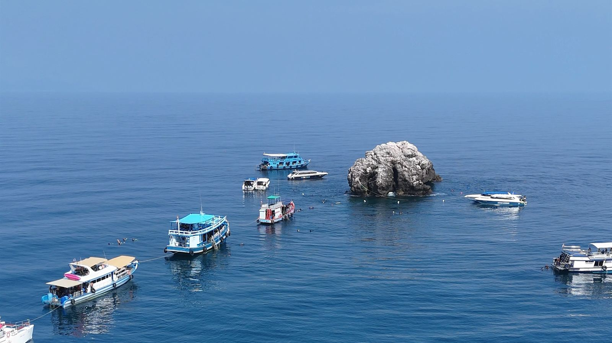
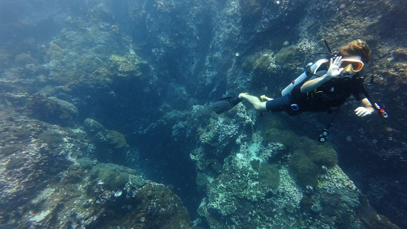
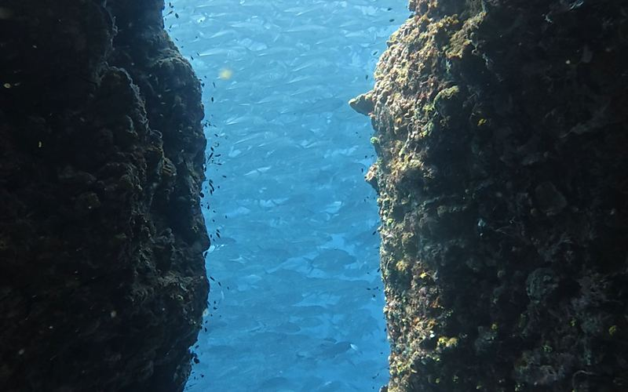
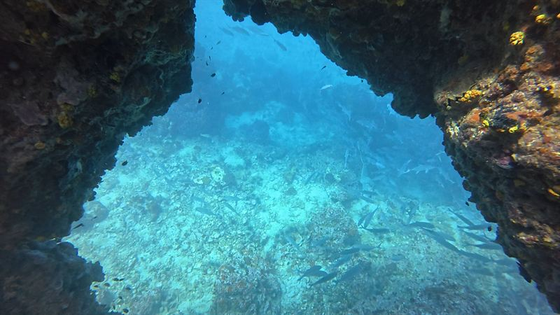

6 m

Ouverture supérieure
Là où nous entrons en général, pour que le passage dans la roche se fasse en descendant.

Accueil / Sites de plongée / Guide de Sail Rock
Un pinacle de granite isolé en pleine mer entre Koh Phangan et Koh Tao, qui s'élève de 40 mètres jusqu'au-dessus de la surface. Des bancs de barracudas et de poissons-chauves-souris, une cheminée qui traverse la roche et, certains jours, un requin-baleine. Voici à quoi vous attendre, quand y aller et comment y plonger.

Sail Rock · pleine mer, à une heure
Le site · Hin Bai
Sail Rock — Hin Bai en thaï — se dresse seul en pleine mer, loin de tout récif. Sans autre abri, les poissons du large se rassemblent autour de lui : c'est pour cela que c'est le meilleur site du golfe, et celui que presque tous les plongeurs de Koh Phangan et Koh Tao veulent voir.
Le rocher plonge de tous les côtés, il y a donc une profondeur pour chaque niveau : les débutants restent sur le haut des tombants, les plongeurs certifiés font le tour du pinacle plus bas, et les plongeurs Deep peuvent atteindre le fond de sable à 40 mètres.

Les tombants de Sail Rock
La cheminée
La particularité de Sail Rock est un tunnel vertical qui traverse le pinacle en son centre. L'ouverture du haut est à 6 mètres, celle du bas à 18 mètres, et à mi-hauteur une fenêtre s'ouvre dans la paroi entre 10 et 14 mètres.
On peut la faire de haut en bas, de bas en haut, ou entrer et sortir par la fenêtre. Nous préférons de haut en bas : en descendant, on évite toute remontée incontrôlée. Aucune formation spéciale n'est nécessaire : contrairement à une grotte, elle est ouverte vers la surface, donc en cas d'urgence on peut toujours remonter directement. Votre guide décide sur place, selon votre niveau.

Là où nous entrons en général, pour que le passage dans la roche se fasse en descendant.

Une fente dans la paroi à mi-hauteur, une autre façon d'entrer ou de sortir.

La sortie par le bas, de retour sur le tombant de Sail Rock.
Ce que vous verrez
À Sail Rock, les poissons sont en nombre. Les bancs se tiennent dans le bleu le long des tombants, et les plus grands visiteurs arrivent du large pour s'en nourrir.

D'immenses bancs en spirale, souvent juste à côté du rocher. L'image que presque tous les plongeurs rapportent de Sail Rock.

Des poissons-chauves-souris curieux qui viennent vous observer de près, et des carangues qui chassent en bordure des bancs.

Le plus grand poisson de la mer vient à Sail Rock se nourrir de plancton. La saison classique va d'avril à juin, mais nous en avons aussi vu en février et en septembre.
Quand y aller
Sail Rock se plonge toute l'année, et l'eau reste à 28–30 °C. Ce qui change, c'est la visibilité et les visiteurs.
Plus de plancton et une visibilité d'environ 5–10 m. Ce plancton nourrit les grands bancs et attire les requins-baleines.
Les mois classiques pour les requins-baleines, avec une eau qui commence à s'éclaircir. Jamais garanti, toujours espéré.
Sail Rock sous son meilleur jour, souvent avec 20–30 m de visibilité. Les meilleurs mois pour voir tout le pinacle d'un seul regard.
Nous restons ouverts, mais les jours où la mer n'est pas sûre le bateau ne sort pas, et vous êtes intégralement remboursé.
Comment le découvrir
Nous partons de Chaloklum à 9h30 sur notre propre bateau, le Rungworawan, et arrivons en général quand les premiers bateaux repartent. Deux plongées, un déjeuner chaud sur le pont, et retour au ponton vers 15h30.
Plongeurs certifiés
Deux plongées guidées avec quatre plongeurs maximum par guide. Avec la spécialité Deep, on peut descendre jusqu'au fond à 40 m.
1 jour3,200฿
DétailsApprendre à plonger
Vos plongées de formation en milieu naturel ont lieu ici : vous êtes certifié sur le meilleur site du golfe.
3 jours12,900฿
DétailsSans plonger
Le haut du rocher est proche de la surface, donc les snorkelers voient aussi les bancs, et parfois un requin-baleine.
1 jour1,500฿
DétailsQuestions
En pleine mer entre Koh Phangan et Koh Tao, dans le golfe de Thaïlande. Depuis notre ponton de Chaloklum, sur la côte nord de Koh Phangan, c'est à environ une heure de bateau.
Le rocher s'élève d'environ 40 mètres jusqu'au-dessus de la surface. La plupart des plongées se font entre 5 et 30 mètres ; le fond à 40 mètres est réservé aux plongeurs ayant la spécialité Deep.
Oui. Les parties peu profondes du rocher conviennent aux baptêmes et aux élèves Open Water, et nos plongées de formation Open Water se font ici. Les jours de mer agitée, nous pouvons choisir Koh Ma, plus calme, pour les débutants.
On peut y plonger toute l'année. L'eau est la plus claire de mai à octobre environ, souvent avec 20–30 m de visibilité. De janvier à avril, il y a plus de plancton et moins de visibilité, mais plus de vie, et les requins-baleines sont plus probables d'avril à juin.
Personne ne peut le promettre. La saison classique va d'avril à juin, et nous avons aussi eu de superbes rencontres en février et en septembre. Quand il y en a un, c'est la plongée d'une vie.
Un tunnel vertical à travers le pinacle, de 6 mètres en haut à 18 mètres en bas, avec une fenêtre dans la paroi entre 10 et 14 mètres. Nous la faisons généralement de haut en bas pour éviter les remontées incontrôlées. Elle est ouverte vers la surface, donc aucune formation spéciale n'est nécessaire ; votre guide décide sur place si elle convient à votre niveau.
Parfois. Comme le rocher est en pleine mer, le courant change d'un jour à l'autre, mais il ne touche généralement qu'un côté du rocher. Nous planifions chaque plongée pour l'éviter et vous l'expliquons au briefing sur le bateau.
Les deux îles y organisent des sorties. Depuis Chaloklum, il faut environ une heure de bateau, et avec notre départ à 9h30 nous arrivons en général quand les premiers bateaux repartent : le rocher est plus tranquille.
Une journée Fun Dive avec deux plongées coûte 3 200฿ pour les plongeurs certifiés, et une sortie snorkeling 1 500฿. Les deux incluent l'équipement, un déjeuner chaud, des fruits et des boissons ; la location de caméra sous-marine est à 600฿.
Indiquez-nous votre niveau et vos dates sur WhatsApp, et nous vous dirons honnêtement comment est la mer et quel jour y aller.
Découvrez aussi nos autres sites de plongée autour de Koh Phangan.